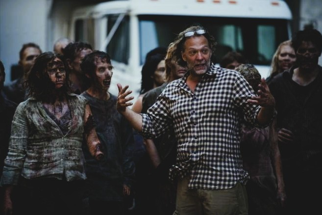
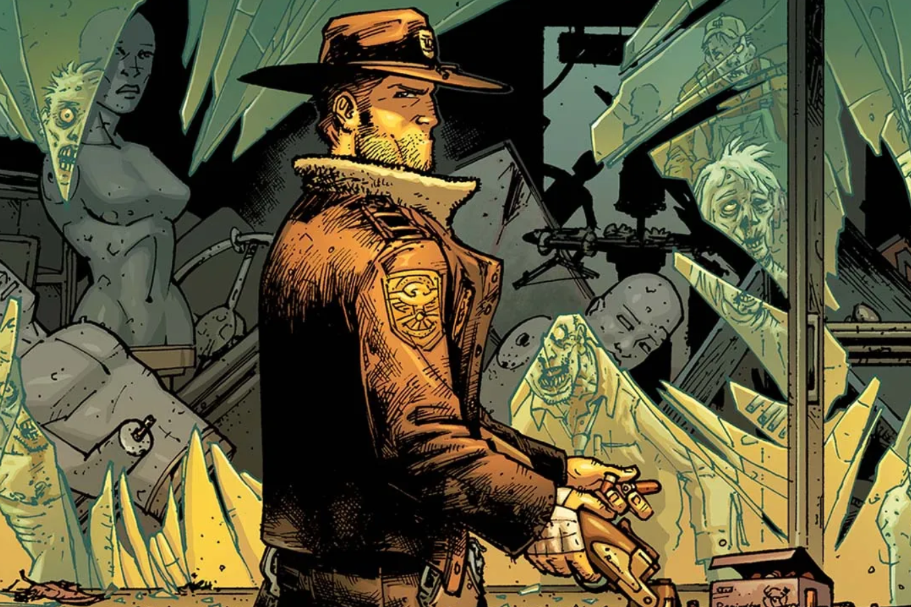
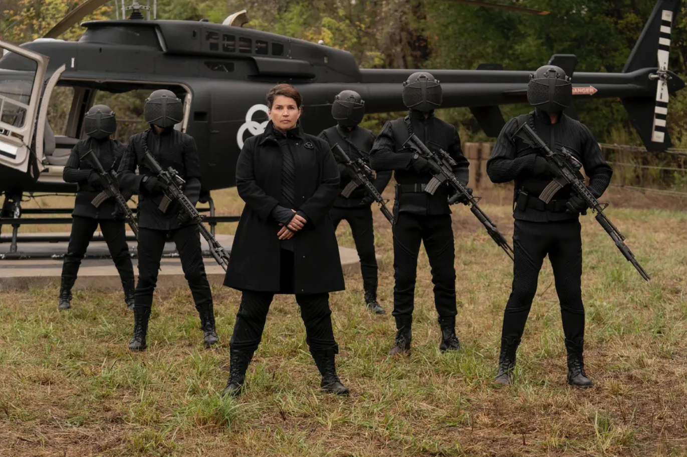

Las Temporadas
Un vistazo a la evolución de la serie
Personajes Clave
Los héroes y villanos que marcaron la historia
Rick Grimes
El sheriff que despertó en un mundo de caminantes y luchó por mantener unida a su familia.
Negan
El carismático villano con un bate llamado Lucille que puso al grupo contra las cuerdas.
Michonne
La guerrera de la katana, símbolo de fuerza, valentía y humanidad en medio del caos.
Curiosidades
Lo que quizás no sabías de la serie

Los extras zombies
Dato curioso
Los actores que interpretaban caminantes recibían entrenamiento especial para moverse y gruñir.

El cómic original
Dato curioso
La serie se basa en el cómic de Robert Kirkman, aunque con varios giros distintos.

El helicóptero misterioso
Dato curioso
El grupo CRM que se llevó a Rick es parte de una historia más grande que conecta spin-offs.